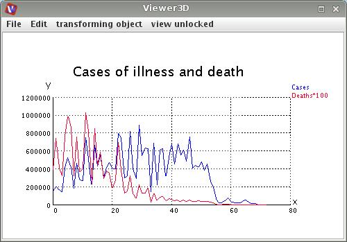

|
|
|
Reads field components from CSV columns.
| input port | type | description | data acceptors |
|---|---|---|---|
| output port | type | description | data schemas |
| outField | VNRegularField | Regular Field 1D with affine geometry |
|
| outObj | VNGeometryObject |
CSV READER
The module reads field components from CSV columns.
Output data
The output field is regular.
Computation parameters
To select an input file click the browse button and select a file in the file browser or type the file name into the text input field below the button.
The field separator input text field defines the field separator.
If have header line check box is on a header line is considered.
Example

Choose CSV reader module from regular data readers library and graph 1D object module from 2D field mappers library and connect them. In the CSV reader module choose a *.csv file. In the vierwer 3D GUI choose background color white, in the graph 1D object choose black color for axes, ticks and legend color. Adapt all other options to your needs.
